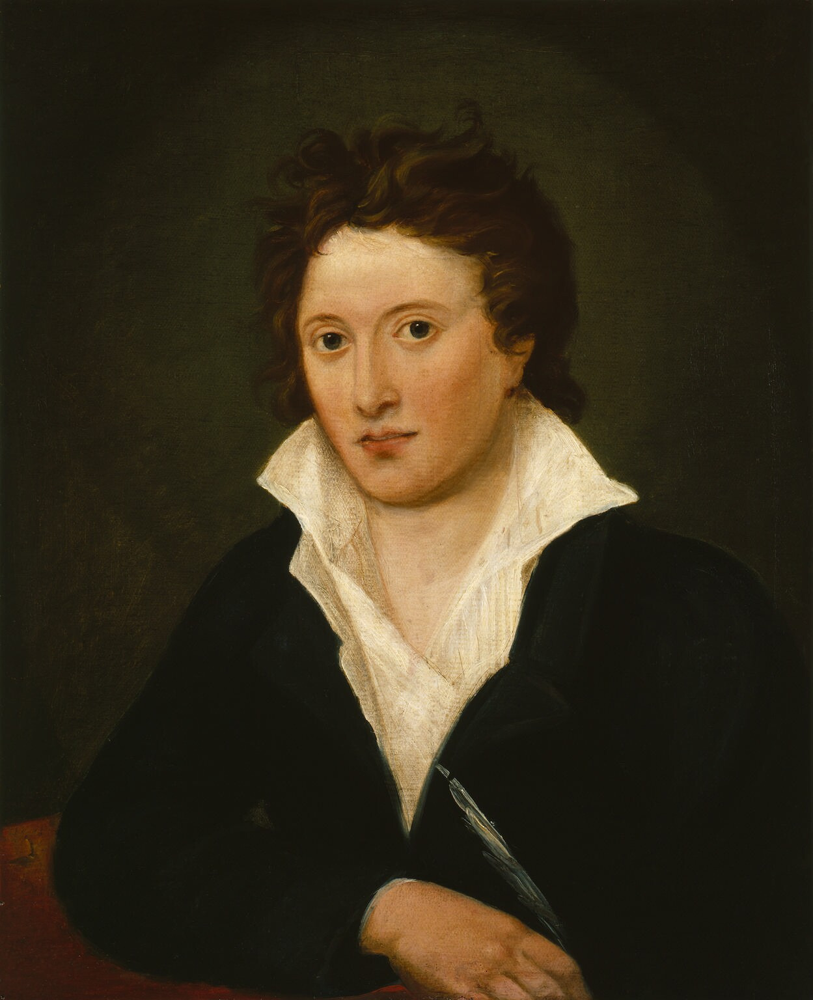

Welcome to the mini digital edition of Mary Shelley's Frankenstein. Made as a project for Text as Data II, taught at the University of Antwerp.
The goal of this assignment is to combine all skills we learned in class to make a digital edition of chapter 7A of the novel 'Frankenstein', written by Mary Shelly. We get provided a template which we need to customize to make the digital edition easy to navigate and look appealing. Specifically, our skills in fields like HTML, Javascript, XSLT and CSS get tested, along with our ability to correctly transcribe, and therefore digitize, a manuscript.
Visit the Bodleian Library
Browse through the Shelley Godwin Archive
Licensed under Creative Commons BY-NC 4.0
For more information, please refer to the Encoding Manual
Victor Van Moer, 20173206